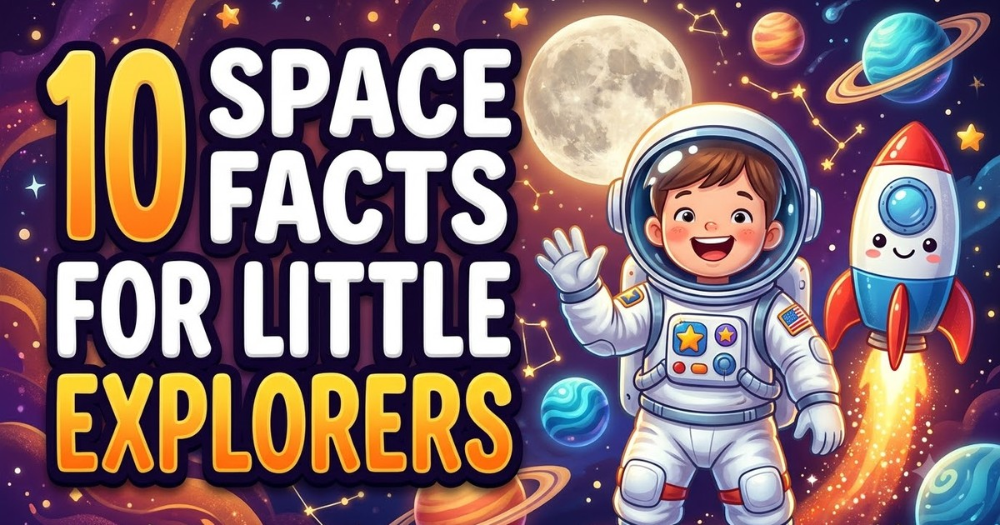

Space Facts for Preschoolers

Space is big, far away, and full of wonderful things — and preschoolers love it. Rockets, planets, the Moon: these are some of the first big ideas young children get excited about. Here are 10 simple space facts for ages 3 to 5, each with a coloring or activity idea to try together. Keep it playful and short, and let your child stop whenever they lose interest.
1. The Sun is a star
The Sun is a star — our closest star. It only looks bigger and brighter than the stars we see at night because it is much closer to us than any other star. It is about 93 million miles away, and its light still takes about eight minutes to reach Earth. The Sun gives us light and warmth every day. Try this: color a big Sun yellow or orange, then draw wavy rays all around it.
2. The Moon does not make its own light
The Moon is Earth's only natural satellite — a rocky world that travels around our planet. It does not shine with its own light. It simply reflects light coming from the Sun, like a mirror in the sky. That is also why the Moon seems to change shape: as it travels around Earth, we see different parts of it lit up by the Sun. Try this: color the Moon pale yellow, then add gray circles for its craters.
3. Earth is our home — and the only planet we know with life
Earth is the third planet from the Sun, and it is our home. It is the only planet in our solar system we know of that supports life. Earth is special because it is an ocean planet: water covers 70% of its surface. From space, Earth looks blue and green, with white clouds swirling above it. Try this: color Earth blue for the oceans and green for the land, and talk about the animals that live in the sea and on the land.
4. Mars is the Red Planet
Mars is sometimes called the Red Planet, and it is red because of rusty iron in the ground. Mars is a cold desert world, about half the size of Earth, and its average temperature is minus 85 degrees Fahrenheit — way below freezing. Wind can blow the red dust into storms so big they cover the whole planet. Try this: color Mars red and orange, then draw a little rover driving across the dusty ground.
5. Jupiter is the biggest planet
Jupiter is the biggest planet in our solar system — more than twice as massive as all the other planets put together. It is a gas giant, made mostly of hydrogen and helium, with no solid surface to stand on. Its Great Red Spot is a giant storm, bigger than Earth, that has been raging for hundreds of years. Try this: color Jupiter with orange, brown, and cream stripes, and add one big red spot.
6. Saturn wears rings of ice and rock
Saturn is famous for its beautiful rings. The rings are made of chunks of ice and rock, and Saturn has seven main rings with spaces between them. Saturn is the sixth planet from the Sun, and like Jupiter, it is mostly a ball of hydrogen and helium. Try this: color Saturn pale yellow, then draw wide rings around it in soft gold and gray.
7. Stars are hot, glowing balls of gas
A star is a hot, glowing ball of gas. The stars you see twinkling at night are suns, just very far away — so far that they look like tiny points of light to us. Our Sun is a star too, only much closer, which is why it looks so big and bright. Try this: draw lots of little stars with a yellow crayon, then count them together.
8. Rockets push their way into space
A rocket carries astronauts and spacecraft into space. It works by pushing hot gas down out of its engines — and that push sends the rocket up, in the opposite direction. Rockets need a lot of power to lift off, because Earth's gravity keeps pulling them back down. Try this: color a rocket red and white, then draw orange and yellow flames coming out of the bottom.
9. Astronauts live and work in space
Astronauts are people who travel into space. They ride rockets there, and some of them live and work on the International Space Station, a home in space that circles Earth about 250 miles up. Long ago, on July 20, 1969, astronauts Neil Armstrong and Buzz Aldrin were the first people to walk on the Moon. Try this: color an astronaut's suit white, add a round helmet, and draw stars all around.
10. Our solar system is one big family
Our solar system is made up of the Sun and everything that travels around it: eight planets, their moons, and lots of comets, asteroids, and space rocks. The eight planets, in order from the Sun, are Mercury, Venus, Earth, Mars, Jupiter, Saturn, Uranus, and Neptune. Pluto is not a planet anymore — it is a dwarf planet. Try this: color all eight planets in a row, from the Sun outward, and name each one as you go.
Turn the facts into a coloring adventure
Facts are easier to remember when little hands are busy. After you read a fact together, let your child color the matching page, tell the fact back to you in their own words, or act it out — spinning slowly like a planet, or counting down like a rocket about to launch. Short, happy sessions work best: five to 10 minutes suits many preschoolers, and it is fine to stop sooner. Let your child stop whenever they lose interest.
- Color the rocket, planets, and Moon in My Little Space Adventure — then help your child find a maze and solve it like a space mission.
- Print the free 'This is Earth!' page from our free printables and color planet Earth after reading fact 3 together.
- Play 'planet walk': name a planet, then take that many steps across the room — one step for Mercury, two for Venus, and so on.
- End the mission with the Junior Space Explorer certificate in My Little Space Adventure — your child has earned it.
Keep the mission going
Try a free space activity first — no sign-up needed — or jump straight into the full space adventure with Nova, Zippy the alien, and Rocket-7.
Frequently asked questions
What age are these space facts for?
These facts are written for ages 3 to 5, with one idea per fact and simple words. Younger children may just enjoy the pictures and the coloring, while older preschoolers can start to remember the planet names.
How many planets are there?
Eight: Mercury, Venus, Earth, Mars, Jupiter, Saturn, Uranus, and Neptune. Pluto used to count as a planet, but it is now called a dwarf planet.
How can I make space fun without a screen?
Read one fact, then color the matching page together. Short sessions of five to 10 minutes work well for many preschoolers — and let your child stop whenever they lose interest. A rocket countdown, a planet walk, or a maze can be just as much fun as a video.
Sources
- NASA Space Place. All About the Sun — the Sun is a star, our closest star, about 93 million miles away, and its light takes about eight minutes to reach Earth.
- NASA Space Place. All About the Moon — the Moon is Earth's only natural satellite, it reflects sunlight, and the first people walked on it on July 20, 1969.
- NASA Space Place. All About Earth — Earth is the third planet from the Sun, the only planet we know that supports life, and water covers 70% of its surface.
- NASA Space Place. All About Mars — Mars is the Red Planet, red because of rusty iron, about half the size of Earth, and a cold desert world.
- NASA Space Place. All About Jupiter — Jupiter is the biggest planet, a gas giant, and its Great Red Spot is a storm bigger than Earth.
- NASA Space Place. All About Saturn — Saturn's rings are made of chunks of ice and rock, and it has seven main rings.
- NASA Space Place. How Do We Launch Things Into Space? — rockets push exhaust down and lift off up, and the International Space Station orbits about 250 miles above Earth.
- NASA StarChild. The Planets and Dwarf Planets — eight planets in our solar system, in order from the Sun, and Pluto listed as a dwarf planet.